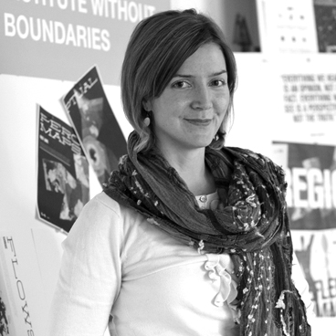

Connected & Unbound
A new regional perspective
The Institute without Boundaries presents Connected & Unbound: A New Regional Perspective, the IwB’s research on symbiotic regions that guided the development of a series of projects and prototypes to create a regionally connected waterfront. Over the course of 2016–2017, the IwB partnered with Waterfront Toronto to use collaborative research and practices, to create projects that will connect the waterfront to the Greater Golden Horseshoe (GGH) region by strengthening human conditions. After nine months of design development, in consultation with Waterfront Toronto, an interdisciplinary team of students and faculty at the IwB, researched the relationships and connections that exist in waterfront regions around the globe and the GGH region.
This year-long project uncovered insights about the regionalization of the world that led to the development of actionable small, and large scale projects that can be implemented at different scales in the region. The IwB’s partnership with Waterfront Toronto gave the team the opportunity to apply regional research to create projects that use Toronto’s waterfront as a case study for the types of projects that will create stronger human and living connections in the region.
The final three proposed projects—Hello Lake, Path Perks, and Downtown Entrepreneur Collective (DEC)—best represent the IwB’s Integrated Design Strategy and regional research to create a regionally connected waterfront.